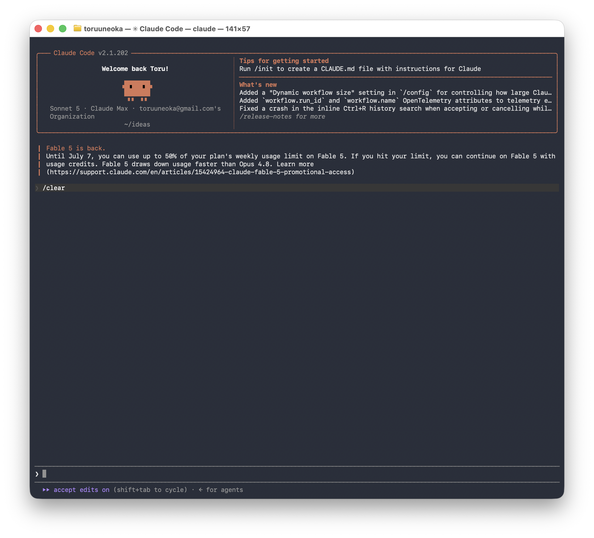
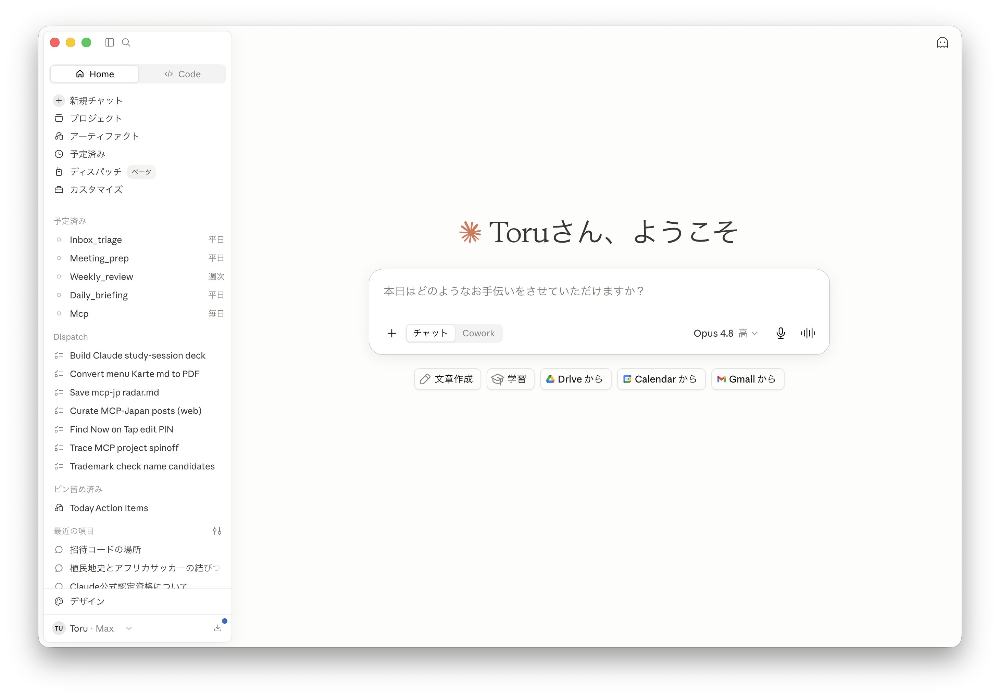

リベラルアーツ
としてのAI
なぜ「リベラルアーツ」？
基礎教養として
読み書き・計算の次にくる土台。特定の職業スキルではなく、非エンジニアも含めて誰もが持てる教養。
“自由”になる技として
liberal＝自由。使いこなすほど「できない」「面倒」から解き放たれ、やりたいことに手が届く。
語源（artes liberales）は“自由な人のための学芸”。AIは、その現代版かもしれない。
まず、プレイヤーを3社だけ
Claude
今日の主役。安全性を重視。文章と仕事の相棒として強い。
この勉強会の中心ChatGPT
いちばん有名。標準モデルは GPT-5.5。知名度で先行。
Gemini
検索と一体。Gemini 3.5。調べものにそのまま強い。
ほかにも Meta（Llama）、xAI（Grok）、Mistral…たくさんある。でも「まず3社」で十分。
3社はいずれも“基盤モデル”を自前で持つ胴元。世の中の多くのAIツールは、裏でこの3社のどれかを呼んでいるだけ、というケースが多い。
「モデル」＝ AIの頭脳の種類
Opus
じっくり考える人。難しい判断・複雑な作業向け。
コスト：高 — Sonnetのさらに数倍Sonnet
ふつうに仕事する人。日常のほとんどはこれで足りる。
コスト：中 — Haikuの数倍Haiku
即答する人。単純な仕分け・大量処理を安く速く。
コスト：低 — いちばん安い（基準）他社も同じ構図。GPT-5.5 や Gemini 3.5 Pro／Flash のように「賢い版・速い版」が並ぶ。値段は同じ処理でもモデル次第で数倍〜二桁変わる（目安）。
用途でモデルを使い分けるとコスト最適。例：判定は安い Haiku、難所だけ Opus。実際に自分の配達アプリやNow on Tapでもこの使い分けをしている。
最近ざわついた話：Fable 5 と Mythos 5
約19日間の“停止”騒動＝AIはもう社会インフラ。だから、使う側にも“教養”（何が起きているか読む力）が要る。
復活時、危険と判定されたリクエストは Opus 4.8 に自動フォールバック。99%超をブロックする分類器を追加して安全性を担保した、という設計。
同じ Claude、用途で使い分ける
＋ おまけ：Dispatch — 外出先のスマホから、母艦PCに仕事を投げる。
※ ChatGPTアプリの月間アクティブ利用者。2026年6月に10億人到達（Sensor Tower推計／Reuters報道、史上最速）。OpenAI公式の週間アクティブ利用者は9億人（2026年2月時点）。
始めるなら、このどちらか

Claude Code ターミナル
軽量にサクサク、パワフルに動かす。コマンドで開発・自動化をがっつり回したいならこれ。

デスクトップアプリ 全部入り
チャットだけでなく、Code・Design・Dispatch まで全部入り。ひとつの画面で切り替えて使える。
中身はどちらも同じ Claude。手になじむ方から始めればいい。
入り口は違っても、動かしているのは同じ Claude。Cowork／Code は手元のファイルやCLIを、Design はブラウザ上のキャンバスを扱う。Windows でデスクトップアプリの Code を初めて開くときは Git for Windows が必要（入れて再起動）。
文脈を持たせると、AIは賢くなる
フォルダを意識
作業の経過をファイルに残し、次のセッションや人へ引き継ぐ。
git の概念
変更の履歴・バージョンを残す。「いつでも前に戻せる」。
GitHub
どこからでも参照。デバイスや人をまたいで共有できる。
Claude はセッションをまたいで記憶を持たない。だから経緯を .md でフォルダに残し、git で履歴化、GitHub で共有——「このファイル読んで」の一言で文脈を渡せる。実際、下書き管理は Notion から GitHub に移した。
文脈を正しく引き継ぐ
迷ったら「このファイル読んで」。.md 一枚で、前提を丸ごと渡せる。
プロンプト → ループ設計へ
期待する振る舞いやアウトプットは、まずプロンプト（指示）で伝える。ただ最近は“一発のプロンプト”より、AI に試す→確認→直すを繰り返させる「ループの設計」へ、ステージが移ってきている。
指示は“ゴール”を渡すだけ。あとは AI が回して近づける。
いわゆるエージェントループ。実行→出力をフィードバック（テスト・エラー・レビュー）で受け、AI 自身が直して再実行する。プロンプト職人芸から、良し悪しを測る評価（eval）とループ設計へ重心が移りつつある。
作ってみた。
非エンジニアの現場から。
ビール樽を飲食店に配達。回る順番を毎回手で考えていた → 自動で最適ルートに。
- 今：出発前にスマホで店名を入れる → 順番と所要時間が出る。準備のストレスが消えた。
- おまけ：GitHubにAPIキーを晒して大炎上 → Claudeに聞いて数分で対処。不正利用はゼロで済んだ。
店名抽出は Claude API。ルートは最近傍法＋2optで計算（GAS＋Google Maps API）。キーは ScriptProperties に退避——直書き厳禁を身をもって学んだ。
- コマンド一発で、文字起こしまで自動。走らせて放っておけば仕上がっている。
- 「始まりました」を探して、冒頭の雑談を自動でカットする小技も後から追加。
pipeline.py（実装は Claude Code）。Auphonic API＋ffmpeg（2秒クロスフェード）＋faster-whisper。※初回はサンプルレートのズレで再生速度がバグり、全員ミニオンの声になった。
新作リリース情報が飲食店にどさどさ届く → 追いきれない → 結局“有名どころ”しか発注されない。小さいブルワリーが埋もれる問題。
- ブルワリーごとにバラバラなPDFでも、銘柄・スタイル・ABV・IBUをちゃんと拾う。
- ブルワリー側は「いつも通りメールを送るだけ」。Webはほぼ自動更新。
Cloudflare Mail Routing → GASでDrive保存 → Claude API でPDF抽出 → スプシをDBにしてWeb表示。新しく作ったものはほぼ無く、既存ツールの組み合わせだけで動いた。
店のInstagramを毎回見るのが面倒 → ロボットに毎朝見回らせて、東京のビールDBにする。コンセプトは Walk in knowing.
- 現実：AIが「ハートランド」をビアスタイルと誤読（91件）…。きれいに集めるより、データ掃除が本番だった。
Instagramは難読化対策でUIでなくデータ取得。GitHub Actionsで毎朝5時に巡回。表記ゆれは“決定的マップ”で固定し、初見の難物だけAIに投げる——ゆらぎ判断を毎回AIに投げると、逆にゆらぎが増える。
非エンジニアの、OSSへの挑戦
mcp-jpまず MCP とは：AIを外部のツールやデータに繋ぐための“共通プラグイン規格”。対応させると、AI がそのサービスを直接読み書きできるようになる。
- 日本のSaaS（freee・勤怠・採用…）を MCP で AI に直結。現在34サービス。
- 公式コネクタが出ていない“空白地帯”を、非エンジニアが自分で作って埋める。
- しかも自分用で終わらせず、誰でも使える形で公開——「無ければ作って、みんなに配る」OSSの発想。
コードは書けなくても、“無ければ作って公開する”側に回れる。
MCP＝Model Context Protocol。AI と外部ツールの間の共通規格で、一度対応すればどの対応AIからも同じように叩ける。mcp-jp は各SaaSのAPIを MCPサーバー化して束ねたもの——公式が動くまでの“橋渡し”を、コミュニティ側で先に用意しておくイメージ。
仕事じゃない、思いつきをカタチに
Jari
90年代サンプラー風の、ブラウザ音楽アプリ。パッドを叩いて遊ぶ。
漢字ドリル
息子向け。AIが漢字を書く時代に、あえて“書く練習”を自動生成。
サッカー作戦ボード
選手を動かして作戦を組むボード。思いつきをそのまま形に。
思いついたら作れる——そのハードルが、もう下がっている。
今日からの、最初の一手
ideas フォルダを、ひとつ作るまずは“作業場”の箱をひとつ。思いついたことは全部ここへ。.md ファイルに書き出す決めたこと・分かったことを1枚に残す。次に開いたとき、そこから続けられる。いきなり本番じゃなく、失敗しても平気なことをひとつ。慣れたら GitHub に上げて、どこからでも続きを。
「作る」のハードルは、
もう下がってる。
AIを使いこなす力は、これからの“教養”。そして、自分を少し“自由”にする技。
![Claude招待リンクのQRコード（https://claude.ai/referral/Vbatd4JYJQ）]()